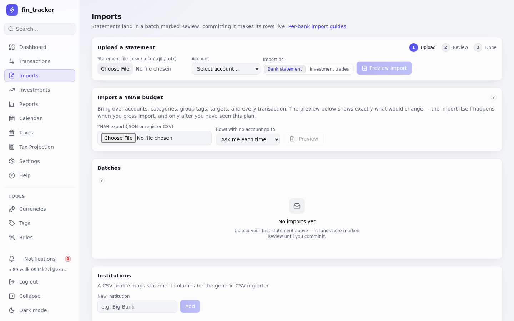
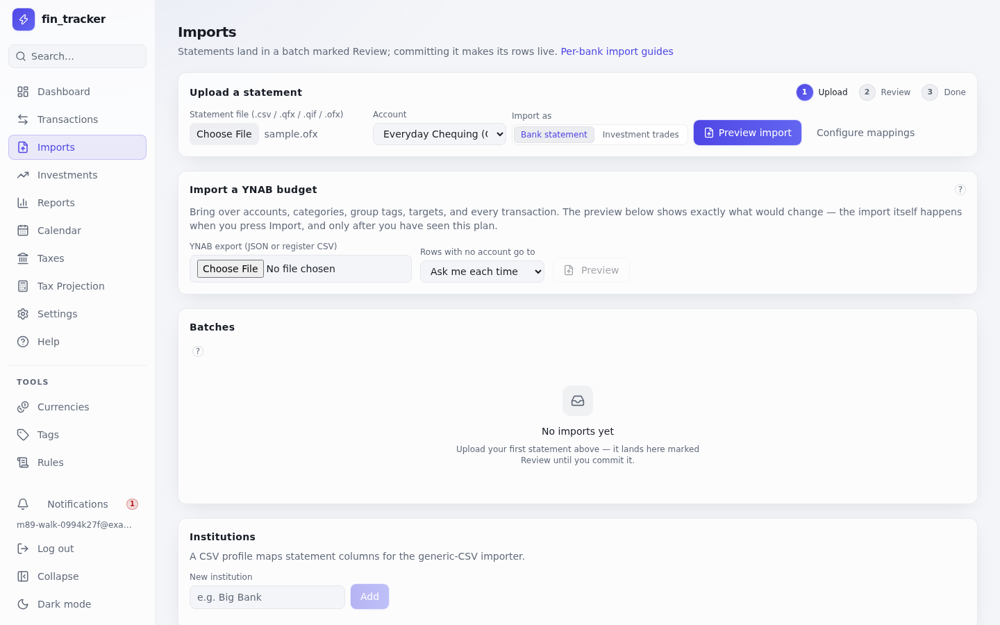
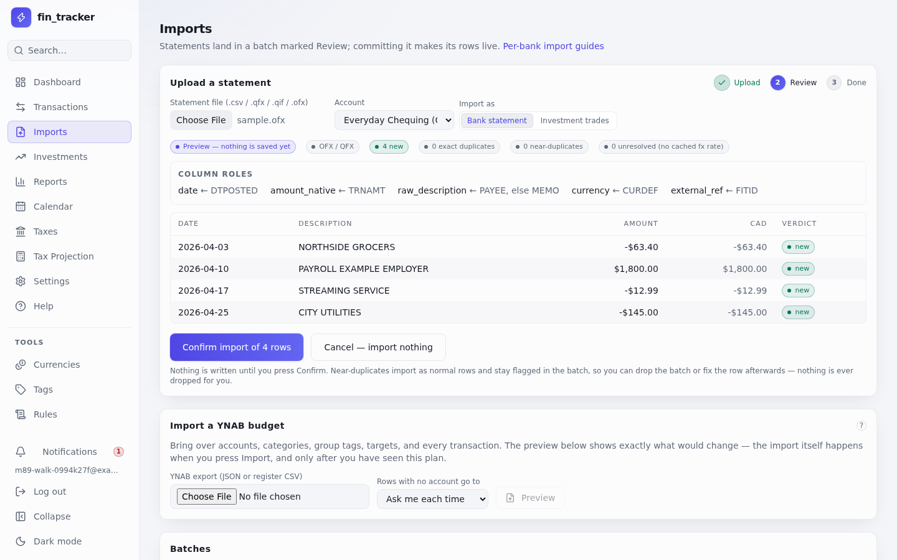
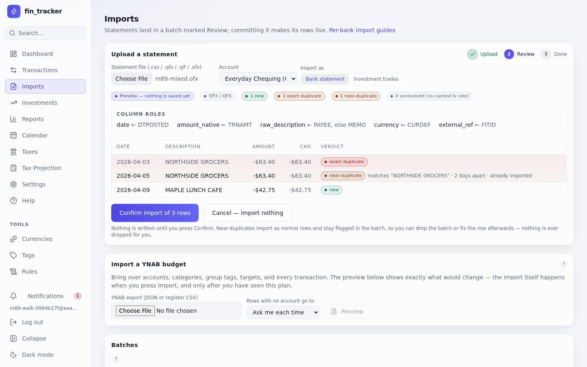
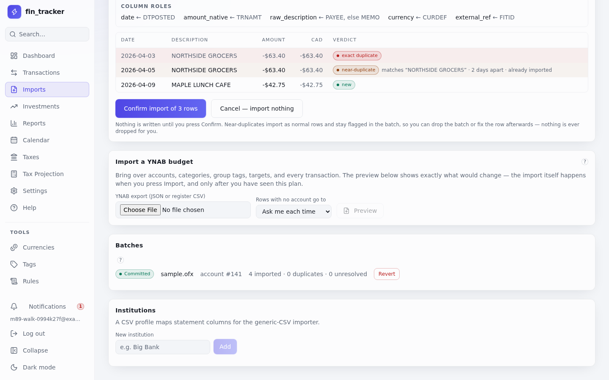
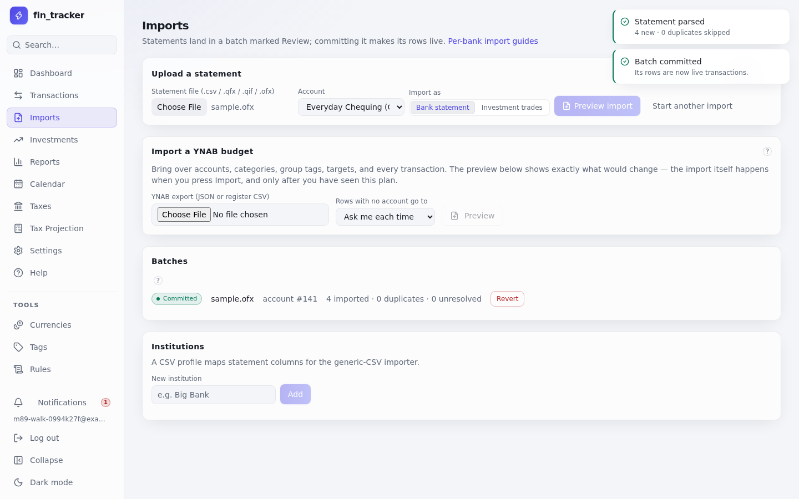
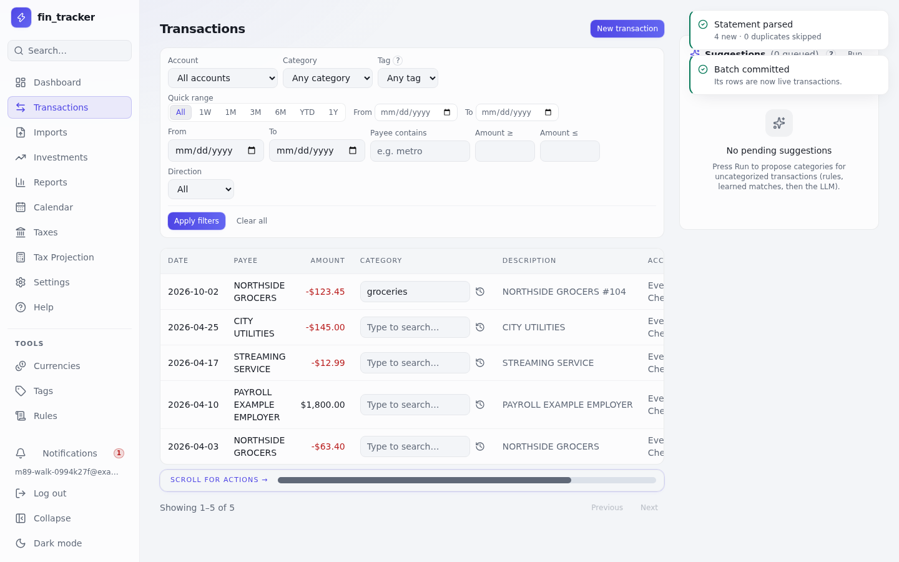

Your first import, start to finish
Where to click, what each colour means, and how to handle duplicate rows the first time. Every screenshot below is the real product.
-
Start at Imports
Imports is a row in the left-hand navigation. Everything you bring in runs through the three steps printed on the card — Upload, Review, Done — so you always know which one you are in. Nothing has been uploaded on this account yet, which is why the Batches list below the card is empty; that list is the memory of everything you have ever imported, with the status of each one.

-
Choose the file and the account it belongs to
Pick the statement your bank exported (CSV, OFX, QFX or QIF) and the account it belongs to. The Import as toggle decides whether the rows are read as bank activity or as brokerage trades. The Preview import button stays disabled until both are chosen — an import without a destination is one you could not undo.

-
Read the preview before anything exists
Preview writes nothing: the header says “Preview — nothing is saved yet” and it means it. Above the rows you can see the column roles the file was read with, so “date came from DTPOSTED, amount from TRNAMT” is something you can check instead of take on trust. This first pass is the happy path — four rows, every verdict green, nothing to decide yet.

-
The three colours, and what each one means
Every row carries a verdict, and the colour is the whole message. Green means new: nothing like it exists and it will import. Amber means near-duplicate: the same amount within three days of something you already have. Red means exact duplicate: that transaction is already in your data, so it is skipped and never written twice. The chips under the header add up to the same story — in this example, 1 new, 1 exact duplicate, 1 near-duplicate — and nothing is hidden, because a row that will not import says so in its own column.

-
Make the review decision
Nothing is written until you press Confirm. Confirm stages the rows into a batch that is still marked Review, and Cancel — import nothing throws the parse away and leaves your data exactly as it was. The note under the buttons is the contract: near-duplicates are never dropped for you, so if the amber row really is a second purchase, it is already in the batch waiting to be committed, and if it is not, you can uncheck it before you commit.

-
Commit when you are sure
A staged batch needs one more click: “Commit N new transactions” makes the rows live, and balances, budgets and reports all see them from that moment. The toast confirms it and the batch badge turns green in the Batches list. Got it wrong? A committed batch keeps a Revert button that takes its rows back out in one click.

-
See it in your feed
Open Transactions: the rows you just committed are there with their own dates, next to anything already in the account — each with an account and a category slot ready to be filled in, or for the suggestion queue to propose one. The Import guides by bank guide lists which export to pull from each institution and which date format that bank likes to use.
